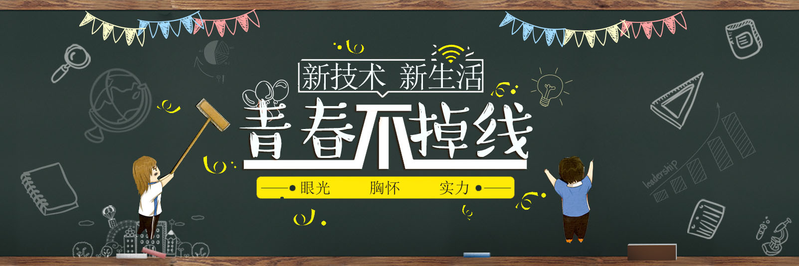

- 主页
- 关于我
- 项目成果
- 我的博客
- 联系我
- 
About Me
大家好,我是刘基定,欢迎来到我的个人主页
这世界最有可能毁灭的方式大多数专家都同意是次意外。这就是为什么会有我们，我们是计算机专家，我们创造意外。很幸运能作为一名IT工作者,也很幸运能亲身感受科技给我们生活带来的便利.我爱这份事业,每敲出一行代码,成就感便会多一分。一种新技术一旦开始流行，你要么坐上压路机，要么成为铺路石,所以我应该不断努力,充实自己的技术,为了科技的发展献出自己的一份力量。
Hi, I'm Liu Jiding. Welcome to my homepage.The most likely way for the world to be destroyed, most experts agree, is by accident. That’s where we come in; we’re computer professionals. We cause accidents.I am very lucky to be a programmer and I am very lucky to feel a lot of convenience brought by science and technology to our life.I love this occupation, each with a line of code, will be a little more sense of achievement.A new technology once became popular, you either sit on rollers, or a paving stone.So I should try my best to enrich my skills and give my strength for the development of science and technology.
My Work


Copyright © 2017.liujd All rights reserved.